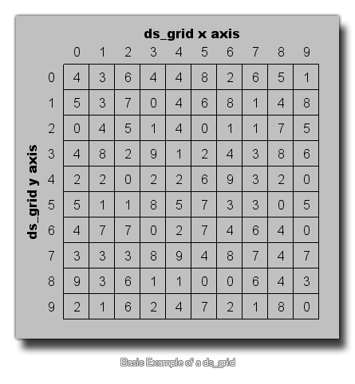

Ein ds_grid ist im Grunde eine Art zweidimensionales Array. Sie definieren das Gitter, indem Sie dessen ganzzahlige Breite und Höhe festlegen, wodurch die Gesamtanzahl der "Zellen" innerhalb des Gitters (die Breite und Höhe multipliziert) festgelegt wird. Diese Zellen werden dann verwendet, um verschiedene Datenwerte (reelle Zahlen oder Strings) aufzunehmen. 
Mit dieser Art von Struktur können Sie den Wert von Zellen im Raster festlegen und abrufen, indem Sie den x- und y-Index angeben (der mit 0 für die x- und die y-Achse beginnt und bis zur Breite-1 und der Höhe reicht -1). Sie können den Wert jedoch auch in bestimmten Gitterbereichen festlegen, einzelne Werte hinzufügen und die Summe, den Maximalwert, den Minimalwert und den Mittelwert für einen bestimmten Bereich abrufen. Dadurch wird diese Datenstruktur zur vielseitigsten aller verfügbaren Daten.
Wenn Sie auf DS-Grid-Datenstrukturen zugreifen, sollten Sie immer versuchen, ganzzahlige Werte für die Zellenposition zu verwenden. Andernfalls werden alle nicht ganzzahligen Indizes von GameMaker Studio 2 wenn Sie dies nicht tun. Wenn dies nicht das ist, was Sie benötigen, müssen Sie die Rundung vorher selbst durchführen, bevor Sie den Index übergeben, den Sie überprüfen möchten.
Es gibt folgende Funktionen, die sich mit DS-Grids beschäftigen.
- ds_grid_create
- ds_grid_destroy
- ds_grid_width
- ds_grid_height
- ds_grid_resize
- ds_grid_clear
- ds_grid_set
- ds_grid_set_disk
- ds_grid_set_grid_region
- ds_grid_set_region
- ds_grid_shuffle
- ds_grid_sort
- ds_grid_get
- ds_grid_get_max
- ds_grid_get_mean
- ds_grid_get_min
- ds_grid_get_sum
- ds_grid_get_disk_max
- ds_grid_get_disk_mean
- ds_grid_get_disk_min
- ds_grid_get_disk_sum
- ds_grid_add
- ds_grid_add_region
- ds_grid_add_disk
- ds_grid_add_grid_region
- ds_grid_multiply
- ds_grid_multiply_disk
- ds_grid_multiply_region
- ds_grid_multiply_grid_region
- ds_grid_value_exists
- ds_grid_value_disk_exists
- ds_grid_value_x
- ds_grid_value_y
- ds_grid_value_disk_x
- ds_grid_value_disk_y
- ds_grid_copy
- ds_grid_read
- ds_grid_write
Abgesehen von diesen spezifischen Funktionen können Sie alle einen Ausdruck ( Accessor genannt ) verwenden, um den Inhalt Ihres Moduls hinzuzufügen oder zu ändern ds_grid. Dieser Accessor ähnelt einem 2D-Array mit der folgenden Syntax:
grid_index[# xpos, ypos]
Weitere Informationen sowie Beispiele finden Sie auf der Seite "GML-Übersicht" unter " Accessoren".